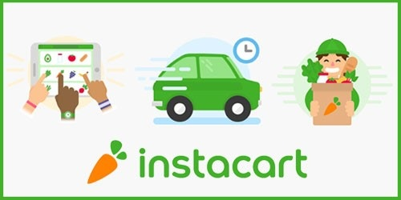
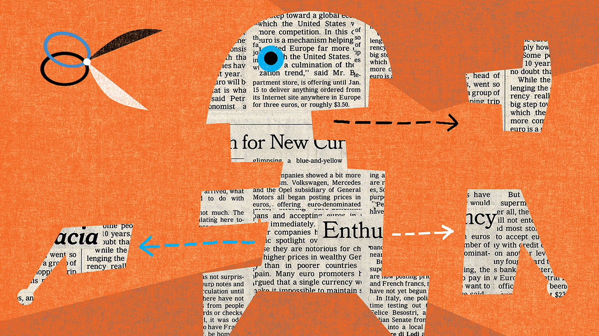
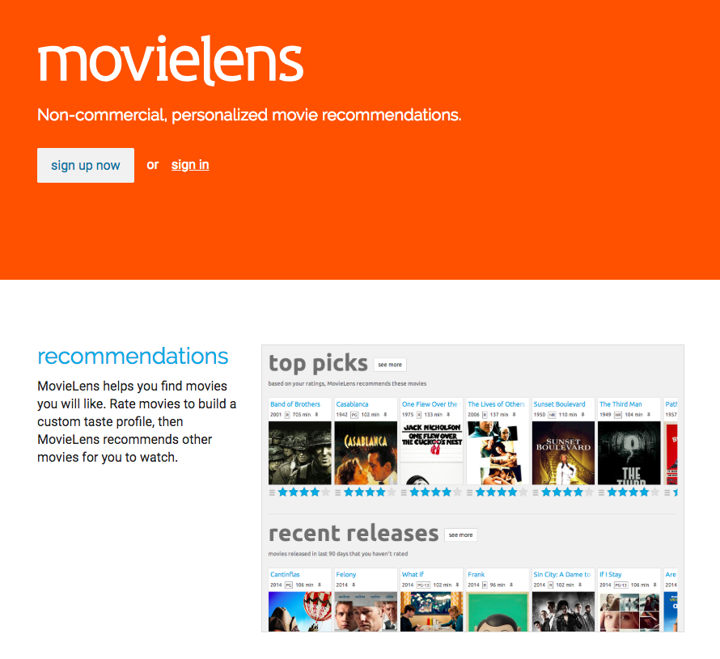
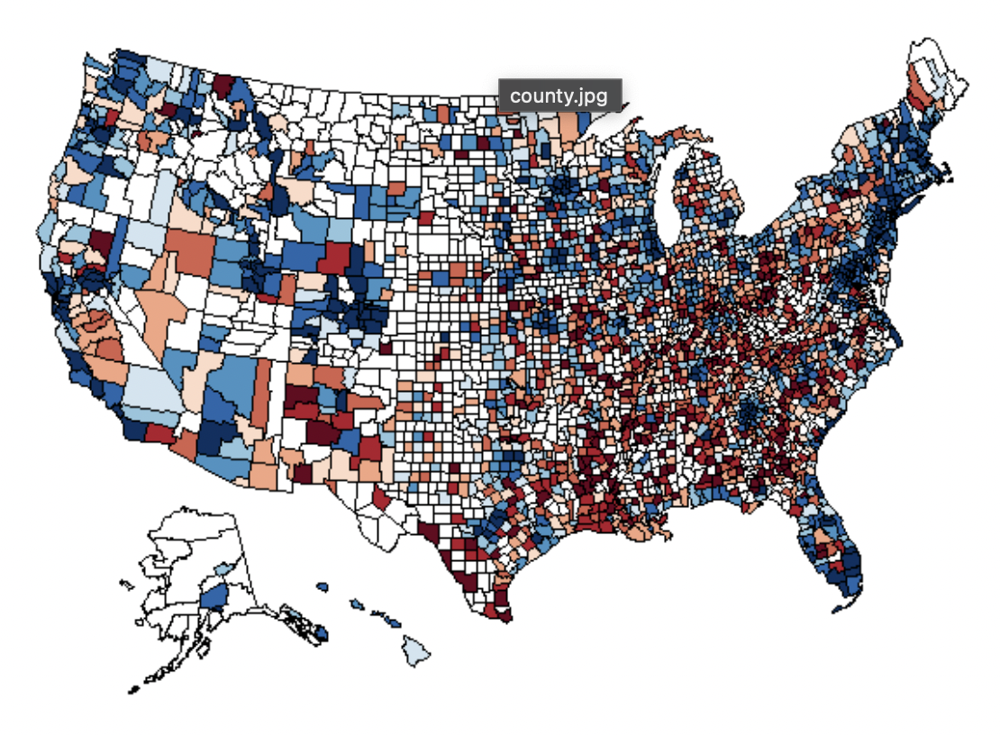
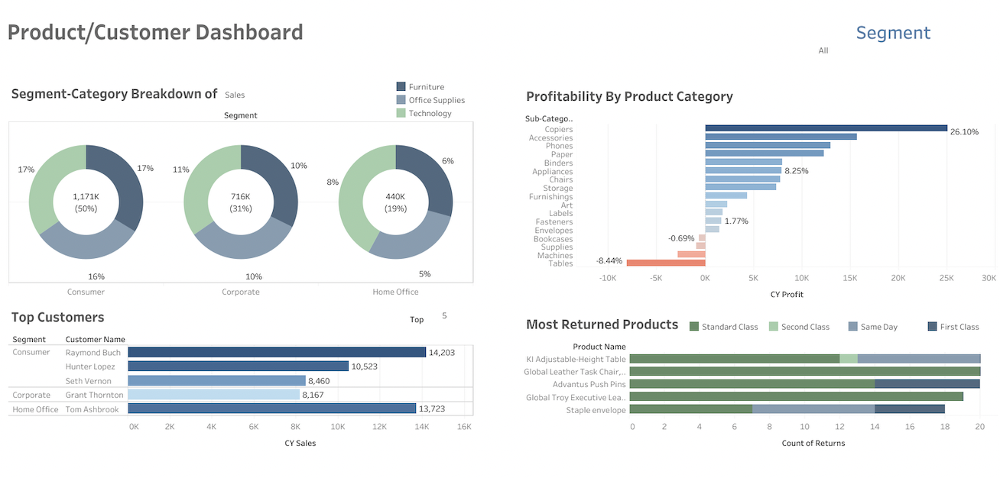

Hello! I'm a data science and AI enthusiast with strong background in data analysis and
predictive modeling, machine learning, and deep learning. I left my Ph.D. program at the
University of Texas at Dallas to pursue my passion for data science in industry and
I'm actively seeking roles in data science and analytics. On my Github page, you'll find information about my education
background and some of my independent projects in various domains.
Ph.D. Preliminary exams: Probability, Stochastic Models, Optimization, Optimal Control Theory
Ph.D Qualifying exams: Econometrics, Advanced Statistics, Game Theory, Microeconomics
Other Ph.D./MS Courses: Programming for Data Science, Applied ML, Modern ML Methods, Advanced R
DeelLearning.AI: Deep Learning, Tensorflow Developer, NLP Specializations
You can view some of my recent project notebooks where I have used Statistical, Deep Learning, Machine Learning frameworks to solve
time-series, computer vision, natural language processing, and regression tasks.
Tools/Frameworks: Sklearn, Pandas, Numpy, Plotly, Shap, Optuna, LightGBM, Tensorflow, spaCy, Flask
Models/Algorithms: MultinomialNB, Random Forest, Gradient Boosting, RESNET, N-BEATS, BERT, Word2Vec

This project involves extensive data mining on a large transactional dataset, and k-means clustering and deep learning for refined customer segmentation. I have also built a predictive model for item reorders and applied the FP-Growth algorithm to identify complex Product Association Rules to enhance product recommendations..

This project involves several tasks, including web scraping, cleaning and preprocessing of Amazon customer reviews, hypothesis testing, and sentiment classification. This involves using custom NLP models as well as a pretrained HuggingFace BERT classifier.

The goal of this project is to build a hybrid NLP model (RNNs, BERT) to classify medical abstract sentences into the role they play (e.g. objective, methods, results, etc) to enable researchers to effectively skim through the literature and dive deeper when necessary.

In this project, I have experimented with various recommender system algorithms for the Movielens dataset, including similarity models, matrix factorization
(with TensorFlow and Spark), Bayesian inference, restricted Boltzmann machines, and deep learning recommenders.

The goal of this project is to develop an ensemble of Neural Basis Expansion networks
trained on U.S. county-level data to predict monthly micro-business density
in a given area for 8-month horizon.
The objective of this project is to implement transfer learning and recent finetuning techniques proposed by two research papers.
In this project, we use sharpness aware minimization, and MC dropout techniques to build an accurate image classification model with little training and beat the performance of original paper.
This project covers web scraping of current market data, building ensemble regression model, and creating a simple web app to predict the price of used car based on its make, model, bodystyle, mileage, year, and location.

Multiple Tableau dashboards featuring dynamic visuals of 1) sales, revenue, and profit metrics across customer segments,
product categories, and time frames, and locations 2) customer retention,
acquisition metrics across time 3) online property listings price analysis 4) job market data.